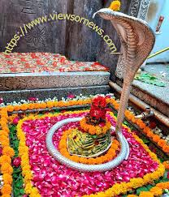

MY BLOG
Welcome to the blog of Suraj kumar

TEMPLE VISIT
Akshardham temple, feb 02 2023
Akshardham is a Hindu temple complex in Delhi, India. Also referred to as Delhi Akshardham..
WHAT IS AKSHARDHAM?
'Akshardham' means the divine abode of God. It is hailed as an eternal place of devotion, purity and peace. Swaminarayan Akshardham at New Delhi is a Mandir – an abode of God, a Hindu house of worship, and a spiritual and cultural campus dedicated to devotion, learning and harmony. Timeless Hindu spiritual messages, vibrant devotional traditions and ancient architecture all are echoed in its art and architecture.The mandir is a humble tribute to Bhagwan Swaminarayan (1781- 1830), the avatars, devas and great sages of Hinduism. The traditionally-styled complex was inaugurated on 6 November 2005 with the blessings of HH Pramukh Swami Maharaj and through the devoted efforts of skilled artisans and volunteers
Durga devi
New Trip, New Plan feb 02 2023
Durga is worshipped in Hindu temples across India and Nepal by Shakta Hindus. Her temples, worship and festivals are particularly popular in eastern and northeastern parts of Indian subcontinent during Durga puja, Dashain and Navaratri.
Durga is a major Hindu goddess, worshipped as a principal aspect of the mother goddess Mahadevi. She is associated with protection, strength, motherhood, destruction, and wars. Durga's legend centres around combating evils and demonic forces that threaten peace, prosperity, and dharma, representing the power of good over evil. Durga is believed to unleash her divine wrath against the wicked for the liberation of the oppressed, and entails destruction to empower creation. Durga is seen as a motherly figure and often depicted as a beautiful woman, riding a lion or tiger, with many arms each carrying a weapon and often defeating demons. She is widely worshipped by the followers of the goddess-centric sect, Shaktism, and has importance in other denominations like Shaivism and Vaishnavism.
Suraj Kumar
Just exploring the temple across India.
Popular Posts
-
Mahakaleshwar Temple
Mahakaleshwar Jyotirlinga is a Hindu temple dedicated to Shiva and is one of the twelve Jyotirlingas, shrines which are said to be the most sacred abodes of Shiva. It is located in the ancient city of Ujjain in the state of Madhya Pradesh, India. The temple is situated on the side of the holy river Shipra -
Somnath Temple
The Somnath temple, also called Somanātha temple or Deo Patan, is a Hindu temple located in Prabhas Patan, Veraval in Gujarat, India. It is one of the most sacred pilgrimage sites for Hindus and is believed to be first among the twelve jyotirlinga shrines of Shiva. -

Omkareshwar Temple
Omkareshwar is a Hindu temple dedicated to Shiva, located in Mandhata, nearby Khandwa city in Khandwa district of the Indian state of Madhya Pradesh. It is one of the 12 revered Jyotirlinga shrines of Shiva
Tags
Travel Mumbai Delhi Popular posts Bihar Exploring Temple Indore, Madhya Pradesh Rajsthan Family Dwarka, Gujarat Veraval, Gujarat vaishno Temple Shiva Ujjain, Madhya Pradesh